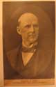
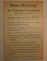

Item 1:
Eugene
Debs for President (postcard, 1908) (NL#453)

Item 1: Mass
Meeting: Explanation of Alien Tax, Citizenship Papers, Returned Solider
Problems (NL#289)
| Index |
|
| Section II. The Crucible of Modern Free
Speech:, 1890-1948 |
|
| Subsection A. Patrons
and Citizens |
|
| Group 2: Workers and Employers 1900-1929 | |
| A.
Syndicalists and Socialists (1915 march?) |
|
|
Item 1:
Eugene
Debs for President (postcard, 1908) (NL#453) |
 |
| use in reproduction:
Lucy Parsons (NL#433) |
|
| B.
1919: Things fall apart |
|
|
Item 1: Mass
Meeting: Explanation of Alien Tax, Citizenship Papers, Returned Solider
Problems (NL#289) |
 |
| C.
The Carrot and the Stick (anti-unionism and welfare capitalism) |
|
| Item 1: Press Club of Chicago's Anti-Red Mass
Meeting
(1921) [CHS#36] |
no picture |